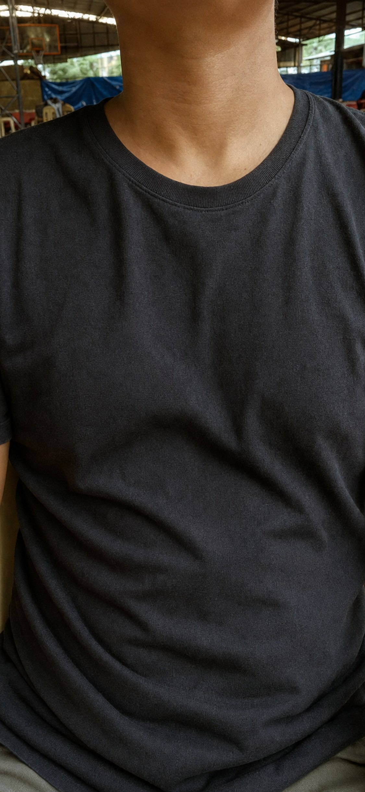

Screens 1 to 7 of the brief, every state. All data is sample data for San Isidro Demo, barangay Maligaya-D, on Saturday, Oct 10, 2026 (the flood started Sunday, Oct 4). Tokens and components: Design system. Model download and AI states: Local AI states. Strings: COPY.md.
01
Home: barangay overview
Route /. One primary action: Check breathing. Rows open Watch list, Hinga history and Stock. The shield opens Privacy & AI. The flood bar has 15 segments: days done in ink, days to go in line color.
1aDefault
Ready and offline. Numbers come from the records on this phone.
Skeletons in --sunken while IndexedDB opens. Check breathing works without records, so it stays on.
Maligaya-D
Opening the records on this phone…
1cEmpty: no flood, no records
A cleared phone: no records, no flood. One next step (Check breathing) and one link (Log a flood, 8a).
Maligaya-D
San Isidro Demo
Nothing recorded yet
Start with a breathing check. When floodwater reaches the barangay, log the flood to start a 15-day leptospirosis watch.
1dError: records won't open
Try again is the primary here, so Check breathing drops to secondary.
Maligaya-D
San Isidro Demo
Couldn't open the records
Nothing was lost. Your records are still saved on this phone.
Still stuck? Close Agapay and open it again.
02–04
Hinga: age, framing, counting
Route /hinga. A focused flow: no bottom nav. Camera steps are dark (--night) so the feed reads in sun; the torso guide is dashed while searching and turns solid green with a word when the chest is found. Cut-offs from WHO IMCI 2014 (imci.ts).
2aStep 1: age and readiness
Next stays disabled (style in DS) until an age is picked and the box is ticked. Resident is optional.
Hinga · step 1 of 3
How old is the child?
The cut-off for fast breathing depends on age.
Under 2 monthsfast: 60+ /min
2–12 monthsfast: 50+ /min
1–5 yearsfast: 40+ /min
Before you start
The child is calm: not crying, not feeding, and the chest is visible.
3aStep 2: framing, looking
The pose model looks for the torso. Start stays off until it is found.

Chest here
Hinga · step 2 of 3
Point at the chest. Hold the phone still.
Looking for the chest…
3bStep 2: chest found, ready
Guide goes solid green with “Chest found”. On dark, the primary button is paper with ink text.
Chest found
Hinga · step 2 of 3
Point at the chest. Hold the phone still.
Chest found. Ready to count.
3cBefore the camera prompt
First run only. Says why, then Continue triggers the browser's camera and microphone prompt.
Next, allow the camera and microphone
The camera counts breaths. The microphone listens for crying. Nothing is recorded, and nothing leaves this phone.
3dCamera blocked
Permission denied or no camera. The fallback is counting by hand with the app's 60-second timer (Local AI states L8b).
The camera is blocked
Hinga can't count without it. To allow it, open this site's settings in your browser and turn on Camera.
4aStep 3: counting, 60 s
Live trace of chest movement. No running count, so nobody reads a half-done number. The bar fills over 60 s.
0:42left
Hold stillstep 3 of 3
Listening for crying. Nothing is recorded.
05
Hinga refusals
The quality gate stops the count and says why. Amber, not red: it is a caution, not a failure. Each sheet has exactly one action, Try again, which returns to step 2. Nothing is saved.
5aCrying detected
From the on-device sound check (YAMNet).
Count stopped
Crying detected
Wait until the child is calm, then count again. Crying changes the breathing rate.
Nothing was saved.
5bToo much movement
From the motion-quality gate.
Count stopped
Too much movement
Steady the phone. Rest your elbows on your knees or a table, and keep the chest inside the box.
Nothing was saved.
5cCan't see the chest
Torso lost or too dark during the count.
Count stopped
Can't see the chest clearly
Move to brighter light or lift the shirt. Keep the whole chest inside the box.
Nothing was saved.
5dReadings didn't agree
The two counting methods (FFT and zero-crossing) disagreed.
Count stopped
Readings didn't agree
The phone counted two ways and got different numbers, so this count isn't safe to use.
Nothing was saved.
06–07
Hinga results
Color follows the IMCI chart BHWs already know: amber band = refer, red band = URGENT, green = not fast. Each band also carries an icon and a word. 6a and 6b scroll (taller frames); the save bar stays fixed. Never a diagnosis, never a dose.
6aFast breathing: refer
Ticking any danger sign turns the screen into 6b immediately.
Residente 010 · HH-02 · 1–5 years · 8:31 AM
Fast breathing for age
52breaths a minute
The cut-off for 1–5 years is 40.
I-refer ngayon
Refer to the midwife or RHU now.
Check for danger signs
Tick any you see. One tick makes this URGENT.
Chest pulls in when breathing in (chest indrawing)
Harsh noise when breathing in (stridor)
Can't drink or breastfeed
Convulsions (kombulsyon)
Very sleepy or hard to wake
Screening aid only. Not a diagnosis.
6bDanger sign ticked: URGENT
The band turns red, the headline becomes “I-refer agad”, and the save button says URGENT.
Residente 010 · HH-02 · 1–5 years · 8:31 AM
Urgent · danger sign
52breaths a minute
Fast for 1–5 years (cut-off 40), and chest indrawing.
I-refer agad
URGENT: bring the child to the RHU now. Don't wait for the next check.
Check for danger signs
1 ticked
Chest pulls in when breathing in (chest indrawing)
Harsh noise when breathing in (stridor)
Can't drink or breastfeed
Convulsions (kombulsyon)
Very sleepy or hard to wake
Screening aid only. Not a diagnosis.
6cSaved
After Save: an inline confirmation replaces the checklist. Done goes Home; the count now shows in Home and in Send.
Residente 010 · HH-02 · 1–5 years · 8:31 AM
Fast breathing for age
52breaths a minute
The cut-off for 1–5 years is 40.
I-refer ngayon
Refer to the midwife or RHU now.
Saved to Residente 010's record
No danger signs ticked · 8:32 AM
Screening aid only. Not a diagnosis.
7aNot fast breathing
Re-check advice from WHO IMCI 2014 (cough or cold: follow up in 5 days if not improving). The danger-sign row still opens the checklist: a sign means refer, whatever the count.
Residente 022 · HH-06 · 2–12 months · 8:47 AM
Not fast breathing for age
38breaths a minute
The cut-off for 2–12 months is 50.
Hindi mabilis ang paghinga
Not fast breathing for this age.
When to check again
In 5 days if the child isn't getting better. Right away if breathing gets faster or harder, or the child can't drink.